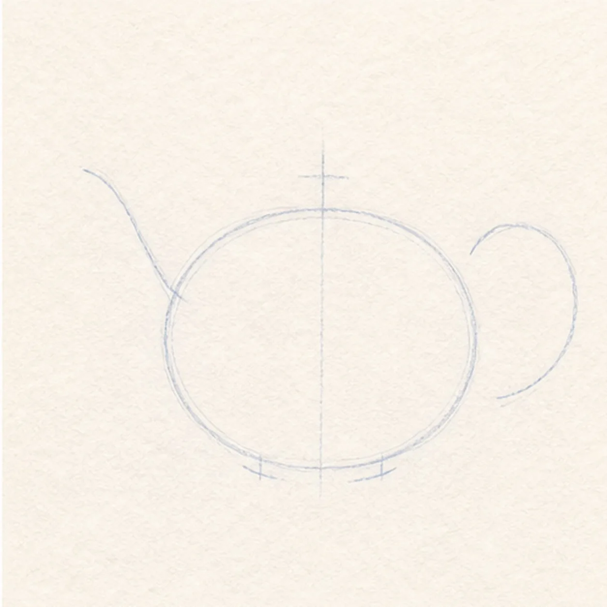
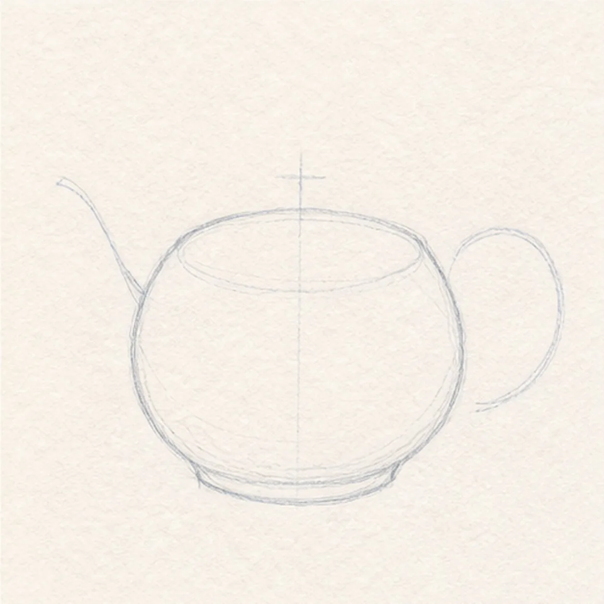
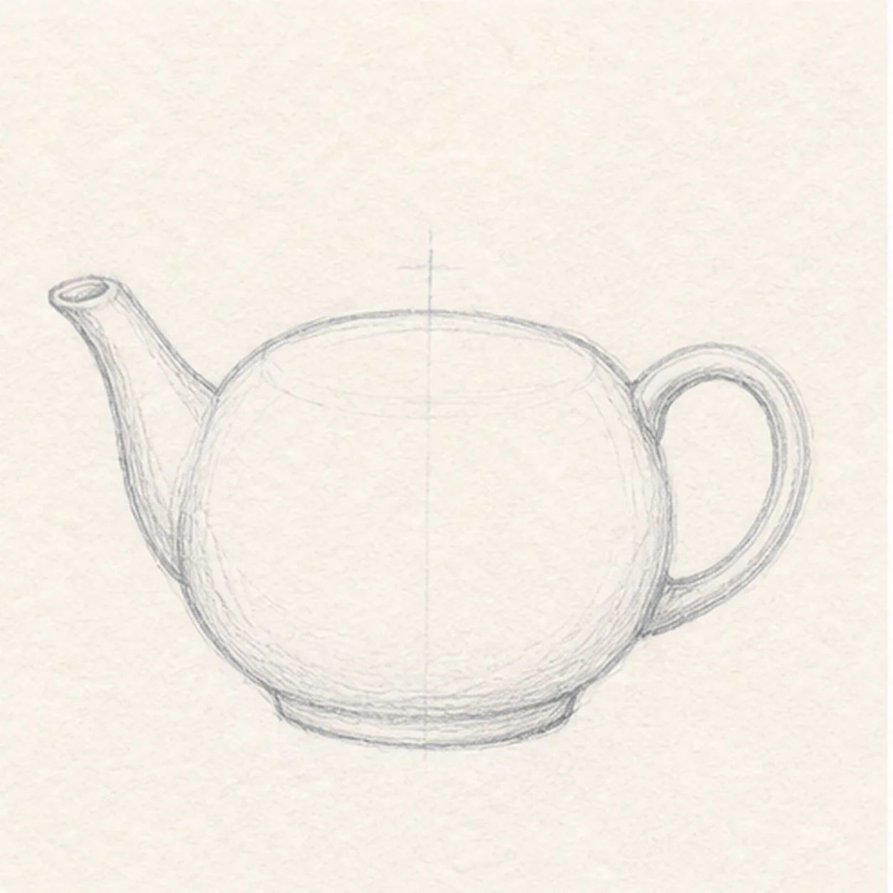
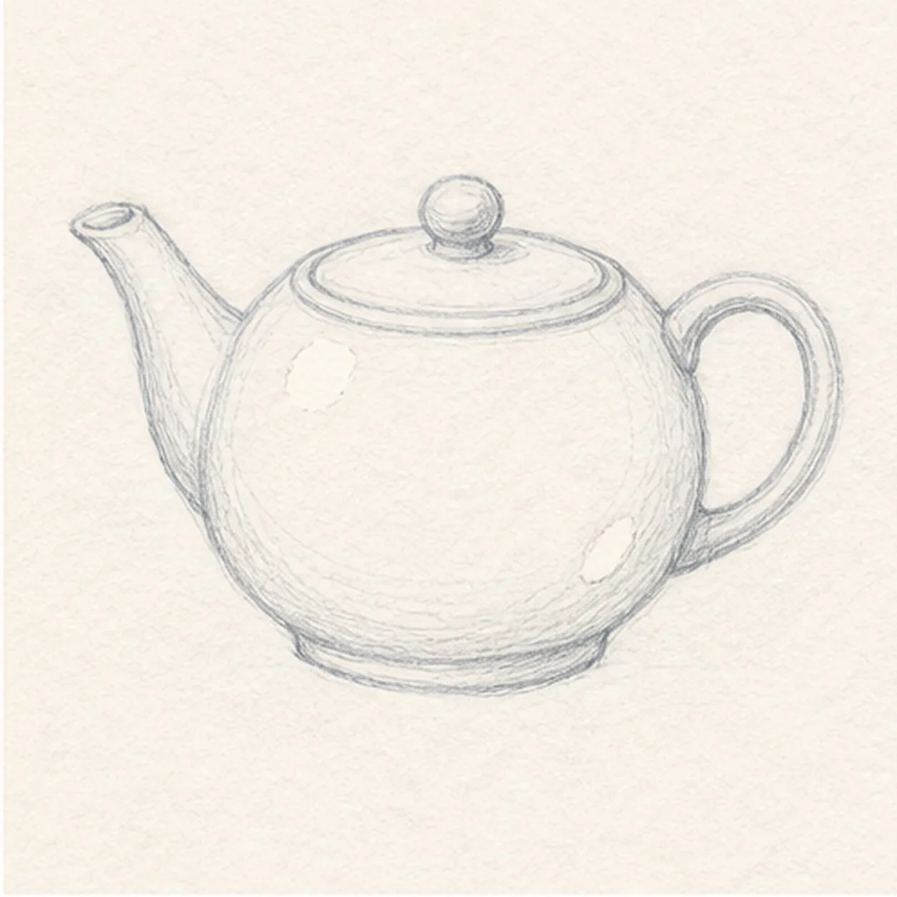
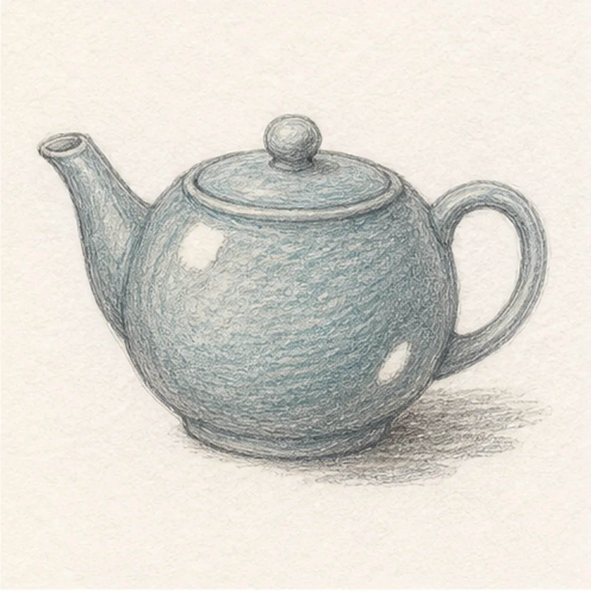

From the archive
Let's draw a ceramic teapot with a lid
Treat this as one small practice round: build the subject lightly, notice the shapes, then darken only the lines that help the finished sketch.
-
01

Map the pot attachments
Use pale HB to place one broad body ellipse, a vertical center axis, a short lid axis, one rising spout route, one C-shaped handle route, and two small base ticks.
Sketch tip: Keep the spout and handle as open routes. Check that both attachments meet the same upper half of the body before you build any finished contour.
-
02

Shape the ceramic body
Connect the rounded pot body, oval top opening, and shallow foot over the established ellipse and base ticks.
Sketch tip: Ghost the top opening before drawing it. Keep its far edge slightly flatter than the near edge so the rim tilts with the pot instead of facing straight forward.
-
03

Attach spout and handle
Wrap the left route with one tapered spout and the right route with one loop handle, keeping both ends anchored to the established body.
Sketch tip: Taper the spout as it rises and stop the handle's inner edges cleanly at the body. Trace both attachment points with your finger before darkening them.
-
04

Fit the lid and highlights
Nest one oval lid insert inside the top rim, add one small round knob, reserve exactly two paper highlights, and place a few restrained ceramic contour marks.
Sketch tip: Echo the rim ellipse in the lid. Keep the knob centered over the body axis and leave both highlight shapes open from the start.
-
05

Build ceramic value
Add directional graphite, muted blue-green glaze, warm-gray shadow planes, and the short broken ground shadow only over the established teapot forms.
Sketch tip: Pull pencil strokes around the body curve and along the spout. Leave the handle interior and two highlights light so the silhouette stays readable.
-
06

Finish the quiet glaze
Strengthen selected keeper contours, deepen the same graphite and blue-green glaze, and clarify only the two established highlights and short shadow.
Sketch tip: Count one spout, one handle, one lid, one knob, and two highlights, then stop while the paper tooth still shows.